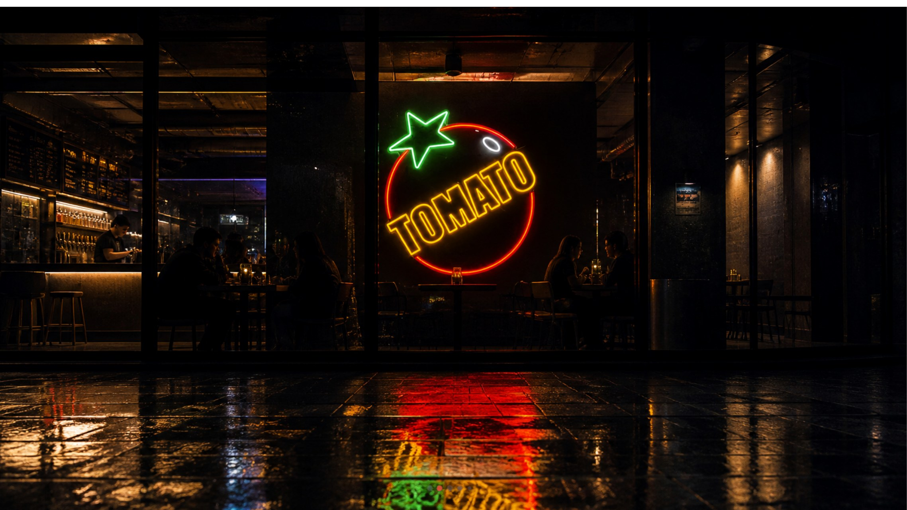
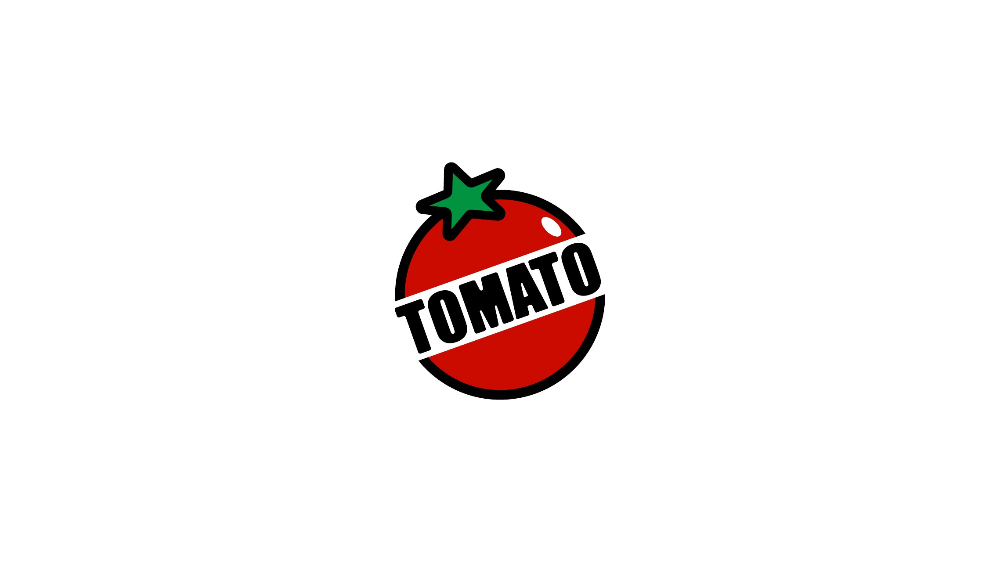
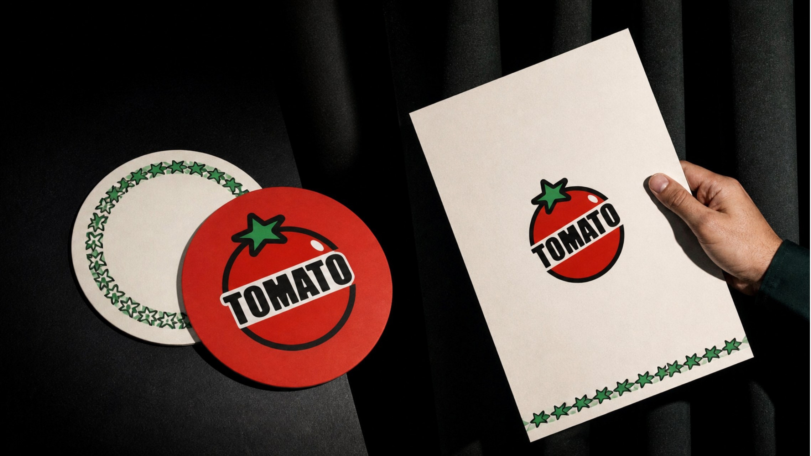
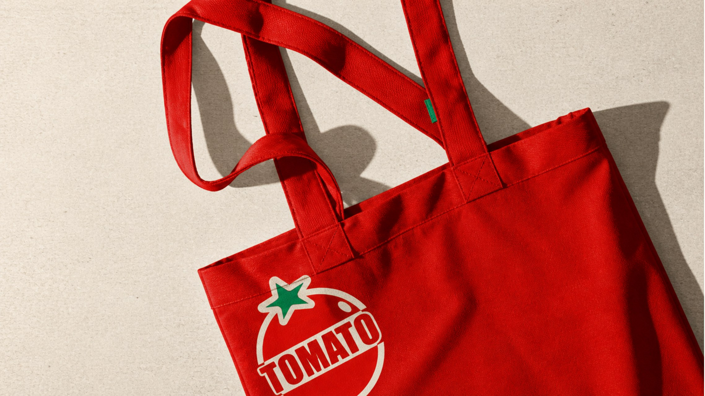
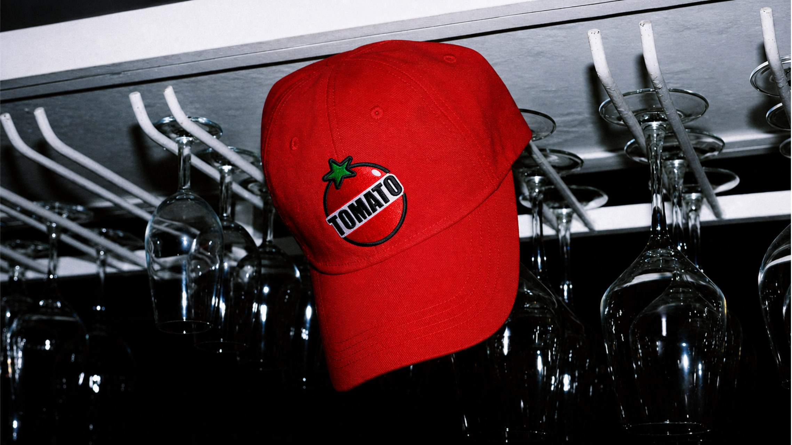
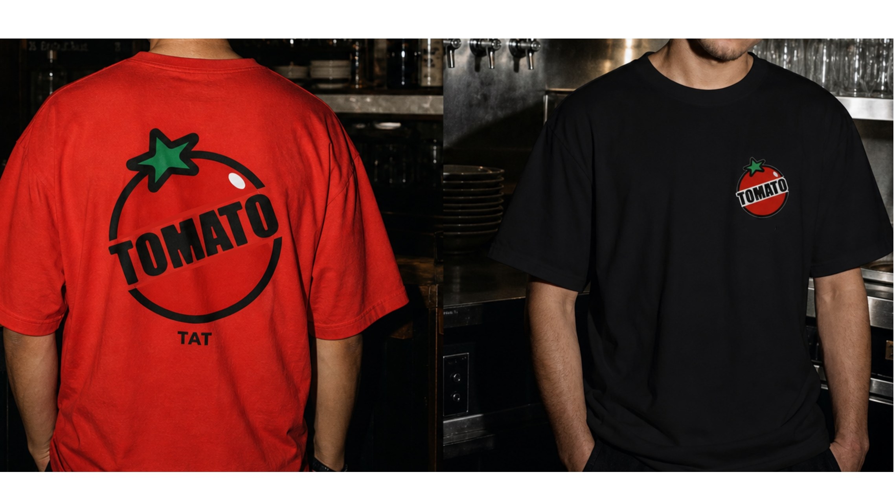

BRAND IDENTITY · HOSPITALITY
BIG TOMATO
大番茄精酿
把一颗番茄变成醒目、亲切且能进入真实空间的精酿品牌识别。
- SCOPE
- 品牌标志 · 色彩系统 · 应用设计
- ROLE
- 创意方向 · 视觉识别 · 品牌延展
- OUTPUT
- LOGO SYSTEM · BRAND APPLICATIONS
01 · BRAND IDENTITY
用最直接的图形，建立第一眼记忆。
圆形番茄、绿色叶片与倾斜字标组成核心识别；高饱和番茄红负责吸引注意，黑色和奶油白建立对比，绿色成为识别点缀。

02 · BRAND APPLICATIONS
让品牌真正进入喝酒、社交与日常使用场景。
识别系统从酒吧灯牌延展到酒杯、杯垫、文具、服装与户外物料，在不同尺寸和材质上保持一致的品牌记忆。




FINAL RESULT
一个能被看见、被记住，也能被带走的精酿品牌。
从门店夜间识别到消费者手中的酒杯与周边，BIG TOMATO 保持同一套鲜明、轻松、有生命力的品牌语言。